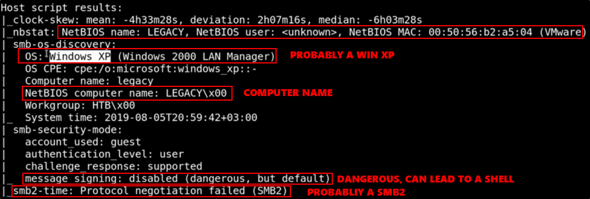
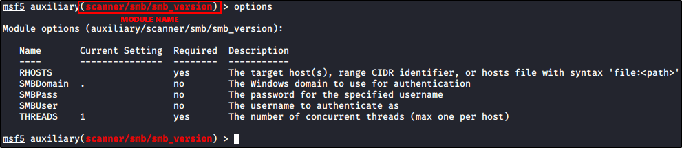

Walktrough - Legacy
Windows Machine
First, start a "nmap -T4 -A -p- IPADDRESS"
Port:
139/tcp open netbios-ssn Microsoft Windows netbios-ssn
445/tcp open microsoft-ds Windows XP Microsoft-ds
3389/tcp closed ms-wbt-server
Probably a Windows XP
################################################################
Samba
Port 139/445 are SMB related:


Useful thing to do:
List Dir With SMBCLIENT


You can use ENUM4LINUX or METASPLOIT:


Results:


We have no info about SMB, so better search on Internet for more:
Preferred Sites: Exploit-DB and Rapid7


Now go on Metasploit and use the module:


What to do now:
Check you user level with whoami and id or getuid (METERPRETER)
In Windows: NT AUTHORITY\SYSTEM (Max level of privileges)
On Unix: root (Max level of privileges)
We can try to get more privileges with getsystem (METERPRETER)
Get SAM passwords with hashdump and crack offline
Use type to output files (is like cat for Linux)
Check your host name with hostname